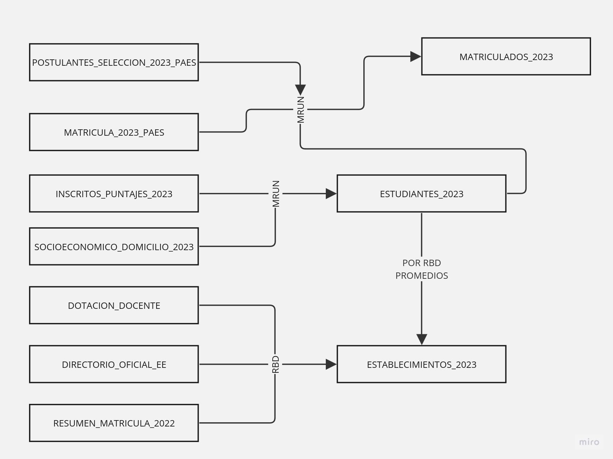

Extraccion y procesamiento de los datos
La extraccion de los datos se realizo en la web de datos abiertos del Ministerio de Educacion de Chile. Donde se extrajeron los datos de los estudiantes, establecimientos y de la matricula por establecimiento. Y a su vez se descargaron los siguientes archivos:
- Puntaje Inscritos PAES
- Matriculados PAES 2023
- Socioeconomico Domicilio 2023
- Postulaciones Universidad 2023
- Resumen de Matricula por establecimiento educacional
- Directorio Oficial EE
- Dotacion Docente
Una vez con la informacion ya recolectada, se opto agrupar las bases de datos por MRUN (id estudiantes) y RBD (id establecimientos):
Una vez agrupado los datos, se realizo el siguiente procedimiento sobre esta nueva base de base de datos contenida en "df_estudiantes"
df_estudiantes = df["inscritos_puntajes_2023"].merge(df["socioeconomico_domicilio_2023"], how="inner", on="MRUN", suffixes=(" ", " "))1. Corrección de datos:
Se ajustan datos faltantes o mal formateados, como cambiar comas por puntos en las notas y manejar valores vacíos.
2. Limpieza de datos:
Se eliminan estudiantes sin información de notas para garantizar la coherencia de los datos.
3. Asignación de valores por defecto:
A los estudiantes sin información sobre el Registro de Establecimiento (RBD) se les asigna el valor "No info". Además, aquellos que no poseean CODIGO_COMUNA_DOMICIO (valor " "), se les asigna el valor 0.
4. Selección de variables y conversión de tipos:
Se eligen variables específicas y se ajustan los tipos de datos según sea necesario. Posteriormente se guardamos la base de datos en "estudiantes_2023.parquet"
Una vez completado este proceso, se seleccionaron las columnas más relevantes para el análisis de puntajes y situación socioeconómica, entre otros (ver variables).
Finalmente, se agruparon nuevamente los datos, esta vez combinando la base de datos "df_estudiantes" con información adicional sobre los matriculados y los resultados de la postulación. Obteniendo una base de datos de almacenada en "df_matriculados"
df_matriculados = df_estudiantes.merge(df["matriculados_2023"], how="inner", on="MRUN", suffixes=(" ", " "))Pero de la base de datos con la informacion de las postulaciones, implementamos un algoritmo que busca el puntaje ponderado del estudiante y lo almacena en el "df_matriculados". Dicho algoritmo se encuentra en ptje_ponderado.py , y despues de lo anterior la base de datos se guarda como "matriculados_2023.parquet"
Ahora preparamos otra base de datos agrupando los establecimientos por el RBD, obteniendo una base de datos contenida en "df_establecimientos
Sin embargo, lo primero que hacemos es preparar un nuevo dataframe con los promedios de notas, Nem, Ranking, Comprension Lectora y Matematicas 1. Este nuevo dataframe se agrupa por RBD, obteniendo el "df_promedios".
Despues esta informacion es agrupada de la siguiente manera:
df_establecimientos = df_establecimientos.merge(df_promedios, how="inner", on="RBD", suffixes=(" ", " "))Ahora creamos "geometry" para poder graficar estos establecimientos, pero previamente eliminamos cuyos establecimientos no tengan latitud y longitud (ademas de convertirlos en float), y despues aplicamos la siguiente funcion:
df_establecimientos["geometry"] = df_establecimientos.apply(lambda x: Point((float(x.LONGITUD), float(x.LATITUD))), axis=1)Y despues realizamos un par de modificaciones, principalmente donde cambiamos el crs a 5360 y eliminamos columnas inneceraias
df_establecimientos.drop(["LATITUD", "LONGITUD"], axis=1, inplace=True)
gpd_establecimientos = gpd.GeoDataFrame(df_establecimientos, geometry="geometry")
gpd_establecimientos.COD_DEPE = gpd_establecimientos.COD_DEPE.apply(lambda x: remplazar_cod_depe(x)).astype(str)
gpd_establecimientos.crs = pyproj.CRS.from_epsg(5360)
gpd_establecimientos.to_parquet(os.path.join("data", "establecimientos_2023.parquet"), engine="pyarrow", compression="snappy")Finalmente, se guardo la base de datos en "establecimientos_2023.parquet"
Por ultimo preparamos una base de datos con los limites cartograficos de las comunas de Chile
gpd_comunas = gpd.read_file(os.path.join("data", "comunas", "comunas.parquet"))Esta base de datos no es tan relevante, solo nos ayudara a visualizar el mapa de Chile. Sin embaro, el enlace de descarga es este link.
Proceso de Estudio

Proceso ETL

Análisis Exploratorio de Datos (EDA)

Discusión